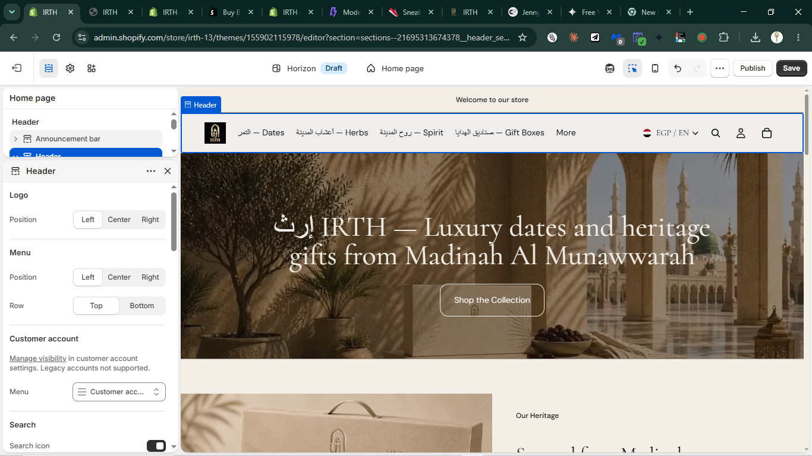
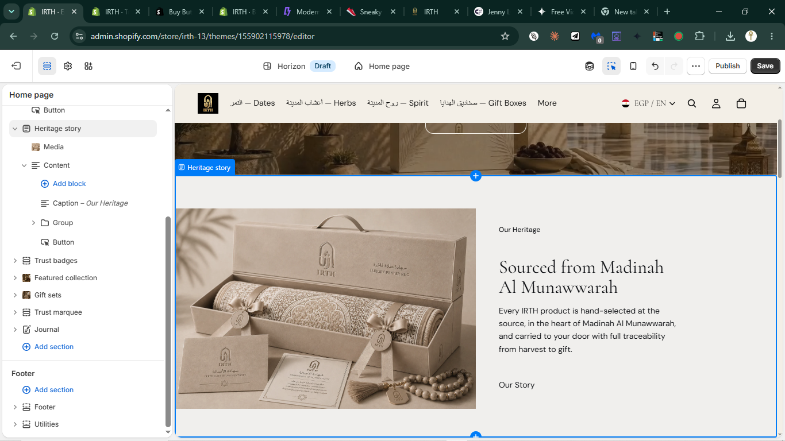

Header + hero: "إرث IRTH — Luxury dates and heritage gifts from Madinah Al Munawwarah" over an archway/dates-bowl photo, single "Shop the Collection" CTA, left-aligned text block. [Live capture]

Heritage story section: gift-box product photography left, "Our Heritage" eyebrow / heading / body / "Our Story" text link right. [Live capture]
"Welcome to our store" is Horizon's stock placeholder — visible top of every page. It's the one piece of the homepage that doesn't read as IRTH. Existing trust-line copy ("Halal Certified · 100% Traceable · Sourced from Madinah Al Munawwarah") is a drop-in replacement.
Why this works: heritage-gift leaders use every visible surface for brand voice — a generic top bar is the fastest "not finished" tell. One-line settings change.
┌──────────────────────────────────────────┐ │ HALAL CERTIFIED · FREE SHIPPING GCC │ ← was "Welcome to our store" ├──────────────────────────────────────────┤ │ [logo] Dates Herbs Spirit Gifts │ ├──────────────────────────────────────────┤ │ إرث IRTH — Luxury dates... │
Currently a bare underlined link — lowest visual weight on the page. Should echo the hero's pill-button language (ghost/outline variant) so both sections read as one coherent flow.
Why this works: matches the Aesop pattern from the prior liquid-glass research — restrained but present secondary actions. Horizon's media-with-content button block already supports a style_class change — no new markup.
Our Heritage Sourced from Madinah Al Munawwarah Every IRTH product is hand-selected... ┌─────────────┐ │ Our Story →│ ← was a bare text link └─────────────┘
Ties directly to the prior liquid-glass research. Header is currently a flat black bar. Making it translucent/blurred only after scrolling past the hero lands the 2026 trend exactly where research says it belongs — a persistent nav — without touching product-page chrome.
Scroll = 0px: Scroll > 0px: ┌────────────┐ ┌░░░░░░░░░░░░┐ ← blurred/translucent │ solid black │ │░ logo nav░│ │ over photo │ ├────────────┤ └────────────┘ [ page content ]
references/current-hero.png — live capture, this sessionreferences/current.png — live capture, this session.lazyweb/design-research/irth-liquid-glass-modern-redesign-2026-07-01/report.mdLimitation: Lazyweb MCP not installed this session; no image-similarity search run. Recommendations grounded in live captures + prior web research.